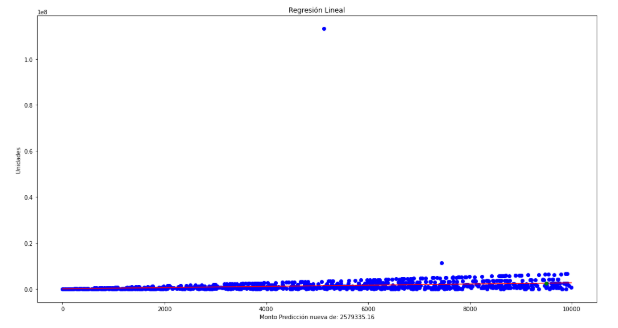
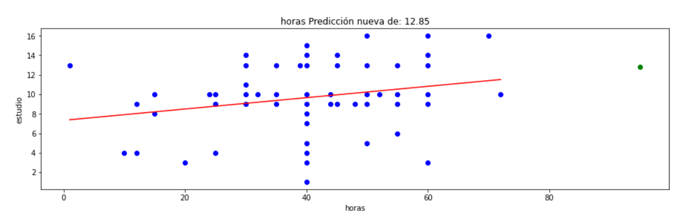
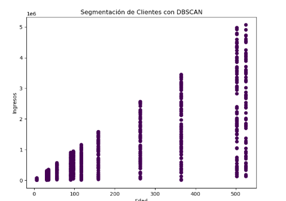
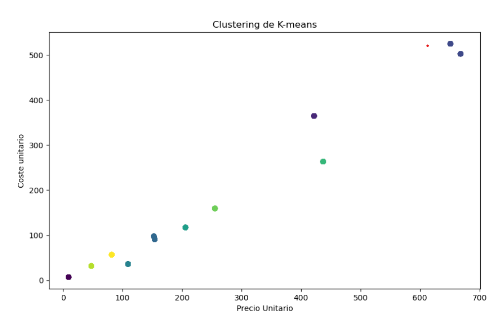
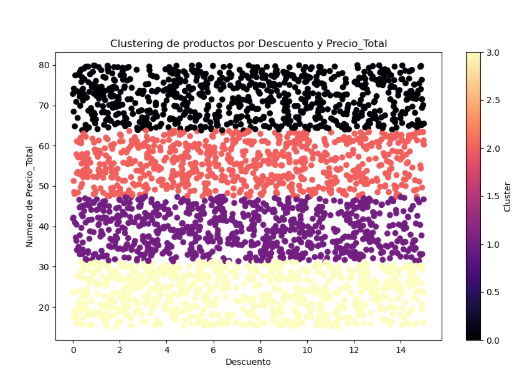

Chapter 1
üî∞Regresi√≥n Linear

# El código siguiente, que crea un dataframe y quita las filas duplicadas, siempre se ejecuta y actúa como un preámbulo del script:
# dataset = pandas.DataFrame(año, Importe venta total)
# dataset = dataset.drop_duplicates()
# Pegue o escriba aquí el código de script:
# El código siguiente, que crea un dataframe y quita las filas duplicadas, siempre se ejecuta y actúa como un preámbulo del script:
# dataset = pandas.DataFrame(año, Coste unitario, Precio Unitario, Unidades)
# dataset = dataset.drop_duplicates()
# Pegue o escriba aquí el código de script:
import numpy as np
import pandas as pd
from sklearn.neighbors import KNeighborsClassifier
import matplotlib.pyplot as plt
from sklearn.linear_model import LinearRegression
#Declarar el modelo indicando que vamos a utilizar regresión lineal
model = LinearRegression()
# Ajustar el modelo con 'Unidades' como predictor e 'Importe venta total' como la variable objetivo
model.fit(dataset[['año']], dataset['Importe venta total'])
# Hacer predicciones utilizando 'Unidades', es decir según la cantidad conocer el importe
predicciones = model.predict(dataset[['año']])
# Graficar los resultados
plt.scatter(dataset['año'], dataset['Importe venta total'], color='blue') # Datos reales
plt.plot(dataset['año'], predicciones, color='red') # Línea de regresión
plt.title('Regresión Lineal')
nuevo_importe = 2023 # El valor de las unidades para el cual deseas predecir
prediccion_nueva = model.predict([[nuevo_importe]])
plt.title(f'Monto Predicción nueva de: {prediccion_nueva[0]:.2f}')
plt.xlabel('año')
plt.ylabel('Importe venta total')
# Agregar el nuevo punto al gráfico analizar
plt.scatter(nuevo_importe, prediccion_nueva, color='green', zorder=5)
#visualizar el resultado
plt.show()
ü¶éRegresi√≥n Lineal 2üçâ

# El código siguiente, que crea un dataframe y quita las filas duplicadas, siempre se ejecuta y actúa como un preámbulo del script:
# dataset = pandas.DataFrame(horas, estudio)
# dataset = dataset.drop_duplicates()
# Pegue o escriba aquí el código de script:import numpy as np
import pandas as pd
from sklearn.neighbors import KNeighborsClassifier
import matplotlib.pyplot as plt
from sklearn.linear_model import LinearRegression
#Declarar el modelo indicando que vamos a utilizar regresión lineal
model = LinearRegression()
# Ajustar el modelo con 'horas' como predictor e 'estudio' como la variable objetivo
model.fit(dataset[['horas']], dataset['estudio'])
# Hacer predicciones utilizando 'horas', es decir según la cantidad conocer el importe
predicciones = model.predict(dataset[['horas']])
# Graficar los resultados
plt.scatter(dataset['horas'], dataset['estudio'], color='blue') # Datos reales
plt.plot(dataset['horas'], predicciones, color='red') # Línea de regresión
nuevo_importe = 95 # El valor de las horas para el cual deseas predecir
prediccion_nueva = model.predict([[nuevo_importe]])
plt.xlabel('horas')
plt.ylabel('estudio')
plt.title(f'horas Predicción nueva de: {prediccion_nueva[0]:.2f}')
# Agregar el nuevo punto al gráfico analizar
plt.scatter(nuevo_importe, prediccion_nueva, color='green', zorder=5)
#visualizar el resultado
plt.show()
üòÅ Clustering 1 üè¢
Caso 1:
DBSCAN
# El código siguiente, que crea un dataframe y quita las filas duplicadas, siempre se ejecuta y actúa como un preámbulo del script:
# dataset = pandas.DataFrame(Coste unitario, Importe Coste total, Importe venta total, Precio Unitario, Unidades)
# dataset = dataset.drop_duplicates()
# Pegue o escriba aquí el código de script:
import pandas as pd
import matplotlib.pyplot as plt
from sklearn.cluster import DBSCAN
dataset = dataset
dataset = dataset[['Coste unitario', 'Importe Coste total']]
#crear y ajustar el modelo de KMeans
dbscan = DBSCAN(eps=0.2, min_samples=5)
dataset['Unidades'] = dbscan.fit_predict(dataset)
plt.figure(figsize=(8,6))
plt.scatter(dataset['Coste unitario'], dataset['Importe Coste total'], c=dataset['Unidades'], cmap='viridis')
plt.title('Segmentación de Clientes con DBSCAN')
plt.xlabel('Edad')
plt.ylabel('Ingresos')
plt.show()
Caso 2:
Número de Clusters
K-means
# El código siguiente, que crea un dataframe y quita las filas duplicadas, siempre se ejecuta y actúa como un preámbulo del script:
# dataset = pandas.DataFrame(Unidades, Coste unitario, Precio Unitario, Importe Coste total, Importe venta total)
# dataset = dataset.drop_duplicates()
# Pegue o escriba aquí el código de script:
import numpy as np
import pandas as pd
import matplotlib.pyplot as plt
from sklearn.cluster import KMeans
dataset = dataset
x= dataset[['Precio Unitario','Coste unitario']]
kmeans= KMeans(n_clusters=10, random_state=42)
dataset['Unidades']=kmeans.fit_predict(x)
plt.figure(figsize=(10,6))
plt.scatter(dataset['Precio Unitario'], dataset['Coste unitario'],c=dataset['Unidades'],cmap='viridis')
plt.title('Clustering de K-means')
plt.xlabel('Precio Unitario')
plt.ylabel('Coste unitario')
plt.show()
Caso 3
K-means Cmap= Magma
# El código siguiente, que crea un dataframe y quita las filas duplicadas, siempre se ejecuta y actúa como un preámbulo del script:
# dataset = pandas.DataFrame(Precio_Total, Satisfaccion cliente, Descuento,Precio_Total)
# dataset = dataset.drop_duplicates()
# Pegue o escriba aquí el código de script:
import pandas as pd
import numpy as np
from sklearn.cluster import KMeans
import matplotlib.pyplot as plt
datos = dataset[['Descuento','Precio_Total']]
kmeans = KMeans(n_clusters=4)
datos['Satisfaccion cliente'] = kmeans.fit_predict(datos)
plt.figure(figsize=(10,6))
plt.scatter(datos['Descuento'],datos['Precio_Total'], c=datos['Satisfaccion cliente'], cmap='magma')
#cool, winter coolwarm
plt.xlabel('Descuento')
plt.ylabel('Numero de Precio_Total')
plt.title('Clustering de productos por Descuento y Precio_Total')
plt.colorbar(label='Cluster')
plt.show()
üî∞ P√ÅGINA WEB üõ†Ô∏è
-
Requisitos
Infraestructua
-
Base de datos
- sql lite
-
Web
-
Librerías
-
Servicios
-
Open SSH
-
DNS Dinamicos
-
Correo electrónico
- PostFix
-